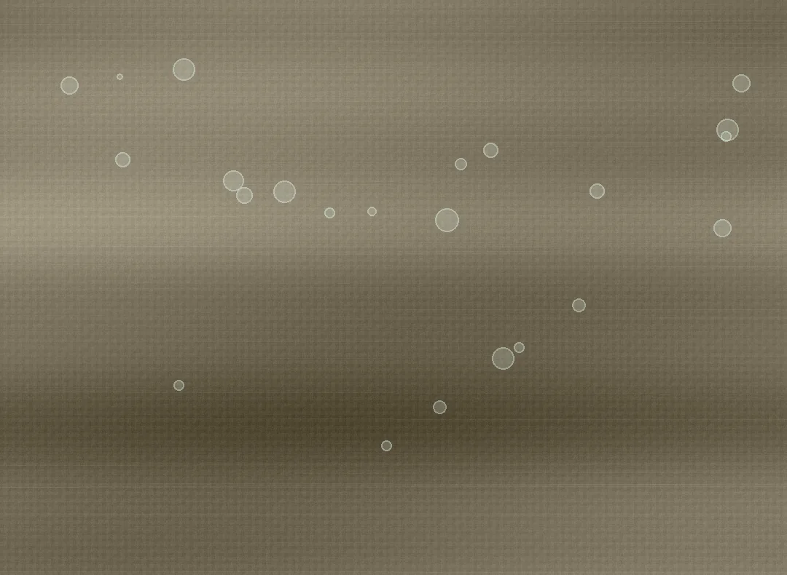

COATED FABRICS
涂层功能性面料
围绕涂层手感、表面效果与服装用途，开展材料选择与功能工艺匹配。

MATERIAL OVERVIEW
从结构出发，匹配应用需求。
涂层与拒水整理应分别理解。涂层手感、表面风格、透气和防护目标都需要在实际样布上核实。
涂层方案需要结合基布、涂层类型与加工工艺统一评估。不同设计对手感、表面质感和防护方向的侧重点存在差异，应以具体样布与项目要求确认。
材料选型工艺匹配来样开发
咨询此类面料 DEVELOPMENT FOCUS
材料开发关注什么？
01
基布匹配
根据外观、厚薄与成衣用途选择合适的织物基础。
02
工艺路线
结合功能方向、手感和加工条件讨论涂层工艺。
03
效果确认
通过样布和必要测试确认外观、加工适应与功能表现。
适用开发方向
户外夹克、风衣、运动外套及其他功能性服装。
选样时建议明确
基布、涂层工艺、手感、外观、使用场景，并根据具体样布和项目测试资料确认。不同材料及工艺配置可能对应不同的实际性能与加工条件。
围绕具体成衣用途与设计需求开展选样沟通，相关材料方案与合作条件在项目洽谈中确认。
FAQ / 常见问题
涂层功能性面料常见问题
涂层面料的选型需要关注什么？
应同时考虑基布、表面效果、目标手感、加工条件和成衣用途，选择与品牌产品定位相符的工艺方向。
涂层面料是否都适合防护型外套？
不同涂层方案的用途与效果有所区别，不能仅以“涂层”名称判断适用性。应根据应用场景与样布验证情况进行选择。
有现成样布，可以讨论类似手感或外观吗？
可提供参考样布、款式和期待的表面效果，以此讨论材料与工艺可行性。